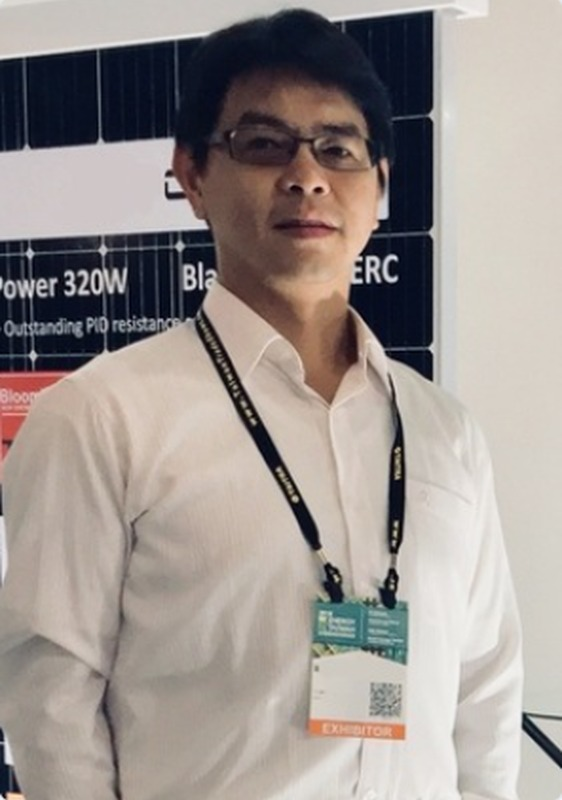

Years in photovoltaic industry
Device engineering, process development and reliability experience at Neo Solar Power and United Renewable Energy.
Experience →Researcher with combined academic and photovoltaic-industry experience, focusing on high-performance perovskite solar cells, scalable vacuum-assisted processing, charge-transport interfaces, reliability under harsh environments, and emerging energy-storage materials.

Device engineering, process development and reliability experience at Neo Solar Power and United Renewable Energy.
Experience →Academic training in semiconductor devices, photovoltaics, lasers and optoelectronic materials.
Education →Innovation, photovoltaic technology and academic recognitions, including bilingual Taiwan award records.
Awards →Vacuum-flash crystallization, blade and slot-die coating, in-line monitoring, and data-driven process control for modules.
Self-assembled monolayers, dopant-free hole-transport materials, passivation, QFLS, PL/EL, and recombination analysis.
Long-term stability, encapsulation, vacuum–light–thermal coupling, radiation tolerance, and space photovoltaics.
| Year | Publications |
|---|---|
| 2005 | 1 |
| 2006 | 0 |
| 2007 | 0 |
| 2008 | 1 |
| 2009 | 2 |
| 2010 | 2 |
| 2011 | 3 |
| 2012 | 1 |
| 2013 | 1 |
| 2014 | 0 |
| 2015 | 0 |
| 2016 | 0 |
| 2017 | 0 |
| 2018 | 0 |
| 2019 | 0 |
| 2020 | 0 |
| 2021 | 3 |
| 2022 | 3 |
| 2023 | 6 |
| 2024 | 4 |
| 2025 | 4 |
| 2026 | 6 |